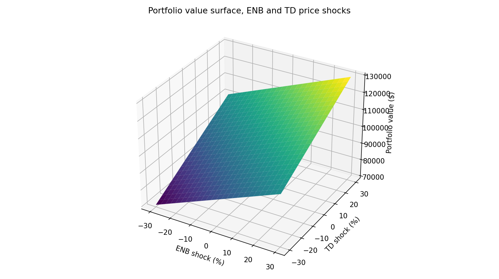
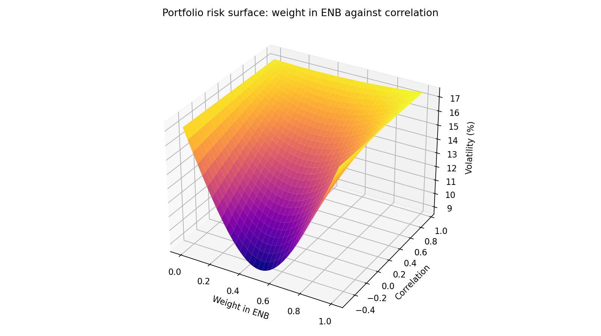
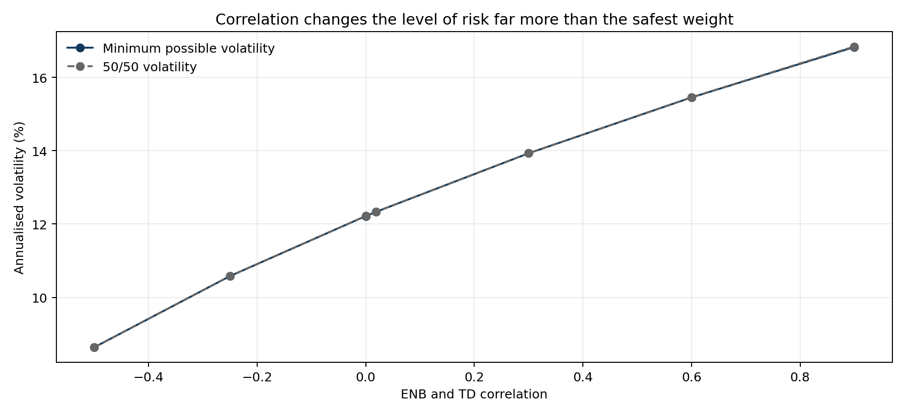
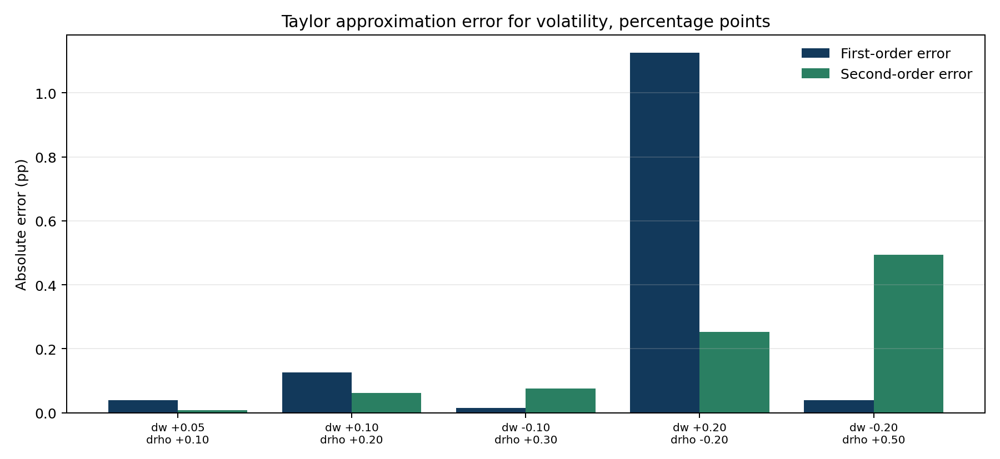

Exploring a Portfolio Risk Surface: ENB and TD
Multivariable calculus on portfolio value and volatility, last 252 trading days
Surface shape
Saddle in weight and correlation




| scenario |
exact_pnl |
exact_pnl_pct |
| Both fall 10% |
-10000.00 |
-0.10 |
| ENB falls 10%, TD falls 5% |
-7451.76 |
-0.07 |
| ENB falls 10%, TD rises 10% |
192.97 |
0.00 |
| ENB rises 10%, TD falls 10% |
-192.97 |
-0.00 |
| Both rise 10% |
10000.00 |
0.10 |
| ENB falls 20%, TD rises 5% |
-7258.79 |
-0.07 |
| ENB rises 5%, TD falls 20% |
-7741.21 |
-0.08 |
Portfolio value is linear in the two prices, so first-order approximations are exact and its Hessian is zero. Volatility is not linear. At the safest weight its gradient in the weight direction is zero, correlation raises risk, and the Hessian is indefinite, which makes the joint surface a saddle. Correlation changes the level of risk far more than the safest weight for this pair.